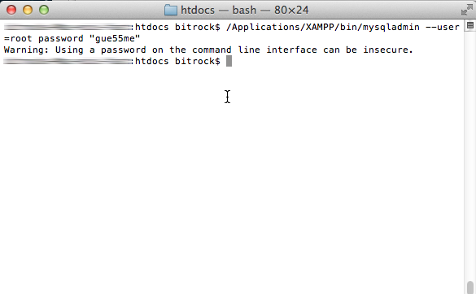
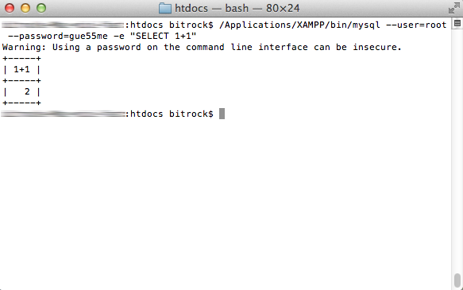

Reset the MySQL/MariaDB Root Password
By default, the MySQL/MariaDB installation that ships with XAMPP has an empty root password. This is a serious security risk, especially if you plan to use XAMPP in production scenarios.
To change the MySQL/MariaDB root password, follow these steps:
-
Ensure that the MySQL/MariaDB server is running.
-
Open a new terminal.
-
Use the mysqladmin command-line utility to alter the MySQL/MariaDB password, using the following syntax:
mysqladmin --user=root password "newpassword"
The mysqladmin command-line utility is located within the bin/ subdirectory of the XAMPP installation directory, typically /Applications/XAMPP.
For example, to change the MySQL/MariaDB root password from its default empty value to the password gue55me, you would execute:
/Applications/XAMPP/bin/mysqladmin --user=root password "gue55me"

Or, if a password has already been previously set and you’d like to change it to a new one, you can use the following syntax:
mysqladmin --user=root --password=oldpassword password "newpassword"
For example, to change the root password from 12345 to gue55me, you would execute:
/Applications/XAMPP/bin/mysqladmin --user=root --password=12345 password "gue55me"
-
Test that your password change has been accepted, by attempting to connect to the MySQL/MariaDB server using the mysql command-line client in the same directory. For example, you could use the command below to connect to the server and return the results of a calculation:
/Applications/XAMPP/bin/mysql --user=root --password=gue55me -e "SELECT 1+1"
